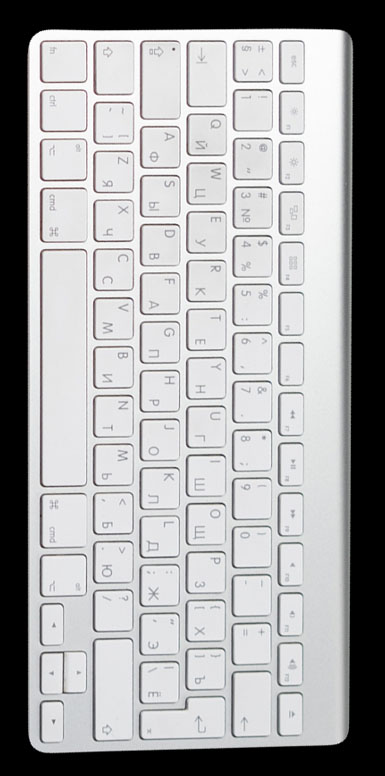
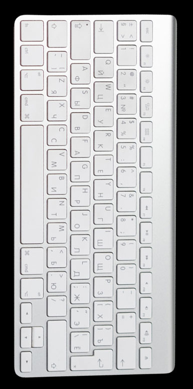

ИВАНОВСКИЙ
ГОСУДАРСТВЕННЫЙ
УНИВЕРСИТЕТ
2021 STUDENЬ
ФРИЛАНС
–
#
ВЕРОНИКА СМИРНОВА / 20.09.2021
ВОЗМОЖНОСТИ
ДЛЯ СТУДЕНТА
 



КАЖДЫЙ СТУДЕНТ
Рано или поздно начинает задумываться о подработке, поскольку
стипендия не всегда покрывает все расходы, а помощь родителей
когда-нибудь закончится. Что уж говорить о коммерческих студентах.
Благодаря развитию интернет-технологий теперь
студентам нет необходимости подстраивать свой
график под работу, спешить после пар на смену и
поздно вечером возвращаться в общежитие, где
предстоит еще выполнять задания по учебе.
ЧТО ЖЕ ТАКОЕ ФРИЛАНС?
Это онлайн-работа, очень похожая на оффлайн, только вместо душного
офиса на другом конце города Вашим рабочим местом становится
любое удобное место, где есть выход в Интернет.
Во фрилансе есть так же, как и в обычной работе,
множество профессий на любой вкус и цвет – каждый
найдет что-то свое
В данной статье мы осветим популярные профессии, которые может
освоить каждый студент буквально за пару-тройку дней и уже начать
зарабатывать небольшие суммы. Конечно, в начале Вы не будете получать
миллионы, как “заливают” Вам наши драгоценные блогеры, продающие
свои курсы. Но на продукты, одежду и оплату того же Интернета хватит.
КОПИРАЙТЕР
Как и везде, копирайтер копирайтеру рознь
Есть несколько направлений, одно из которых Вам придется
выбрать. Основные из них: развлекательное (написание
интересных текстов и постов, обычно для социальных сетей),
SEO (написание статей для продвижения сайта или какого-
либо продукта – одно из самых сложных направлений, где
потребуется не только умение писать), рерайтинг (написание
текста с помощью одного или нескольких исходников),
новостное (написание текстов в формате новостей).
После того, как Вы ознакомитесь с теоретической базой
данной профессии, которая не такая большая по сравнению с
другими, Вам необходимо создать небольшое портфолио.
Расскажите о себе, вставьте абсолютно любые тексты,
написанные от Вашей руки. Если у Вас нет вообще никаких
статей, то не переживайте, это не беда. Выберете любую тему,
в которой Вы более-менее разбираетесь, и напишите
небольшой текст, как пример Ваших умений.
2
Третьим шагом будет поиск клиентов, нуждающихся в
Ваших услугах. Хоть у копирайтеров присутствует
небольшая конкуренция, новичков в этом деле разбирают,
как горячие пирожки, так как очень часто бывает, что
талантливый писатель только-только начинает продавать
свои тексты и не ставит большие ценники для
формирования собственной базы клиентов. Да и честно
говоря, многие заказчики хотят максимально сэкономить, не
уделяя большую долю бюджета на какие-то тексты, которые
они сами могут сделать, на что у них не хватает времени.
3
Отдельное внимание стоит уделить мошенничеству,
которое, к сожалению, очень распространено в Интернете
Большинство новичков попадаются на самые
различные “разводы”. Запомните, что деньги
платить должны только Вам! Никаких залогов,
взносов, первоначальных вкладов и тому
подобное! Однако для копирайтеров особую
опасность представляют заказчики, которые,
получая текст, отказываются оплачивать работу.
Есть несколько способов обезопасить себя.
МЕНЕДЖЕР БЛОГЕРОВ
Блогерство – большая сфера в Интернете, которая
сейчас растет с огромной скоростью. В данной
сфере реализуются множество профессий, и
сейчас мы рассмотрим одну из самых популярных
– менеджер блогеров, в частности, в Инстаграме.
Самое распространенное направление – реклама. Это основной
источник дохода блогера, поэтому очень ценен менеджер, который
искал бы рекламодателей, договаривался с ними, вел рекламный
календарь и передавал все рекламные подачи блогеру.
Данная работа требует высокий уровень
ответственности, потому что необходимо будет
косвенно или напрямую работать с деньгами, а
если блогер имеет большую аудиторию, то суммы
могут достигать шестизначных и более значений.
Продвижение – сложный и небыстрый процесс, поэтому
очень важно правильно выстроить индивидуальный
пошаговый план, подходящий именно этому блогеру
Данное умение вырабатывается только через время, так что не
переживайте, если у Вас не сразу начнет получаться. Для этого
найдите какого-нибудь начинающего блогера, с которым вы вместе
пройдете этот длинный и тернистый путь от нескольких тысяч до
миллиона подписчиков.
ГДЕ ЖЕ ИСКАТЬ БЛОГЕРОВ?
Не ждите, что вам сразу ответят и примут
на работу. Около 90% блогеров откажутся
от Ваших услуг, так как, возможно, у них
уже есть менеджер, или они пока не
нуждаются в такого рода услугах. Но Вы
уже зарекомендовали себя, человек Вас
запомнил, и есть вероятность, что потом
он к Вам обратится.
Для начала работы необходимо изучить
основные термины и понятия: количество
символов с пробелами и без, оригинальность,
академическая тошнота, заспамленность,
вода, а также популярные сайты антиплагиата.
Например, работать по предоплате размером 10-20% от суммы за
полный текст, либо присылать только часть до и остальную после
полной оплаты. Но иногда даже эти способы не работают, поэтому
всегда проявляйте бдительность. Если видите, что аккаунт заказчика
совсем пустой и зарегистрирован несколько дней назад, то, скорее
всего, Вы наткнулись на мошенника.
Каждый блогер стремится набрать большое количество
подписчиков, с чем ему помогает менеджер по продвижению. В
его задачи входит создание плана продвижения, его реализация
и составление ежемесячной статистики, где отображались бы все
результаты работы.
Мы осветили основную информацию о двух популярных профессиях
в Интернете. Но это лишь капля в море, ведь фриланс – кладезь
новых возможностей, благодаря которым человек открывает
неограниченное количество способов заработка
Там же, где Вы за ними следите. Составьте небольшое
портфолио с элементарной информацией о Вас и
пройденных курсах. Обязательно напишите письмо с
предложением Ваших услуг. От него много зависит в
дальнейшей работе. Отправляйте его в личные
сообщения или на пиар-аккаунты, указанные в
описании профиля.
Так же, как и в предыдущей профессии, менеджер бывает разный,
отвечающий за определенный аспект работы: рекламный менеджер,
менеджер по продвижению, контент-менеджер и т.д. Обучиться
данной профессии можно по готовым курсам, которые находятся в
открытом доступе, например, в телеграмм-каналах.
Если Вы студент гуманитарного направления,
то данная профессия идеально Вам подойдет.
Любите писать и видите, что у Вас это хорошо
получается? Попробуйте себя в копирайтинге!
Теперь онлайн-работа подстраивается под
Ваш график, Вы работаете только тогда,
когда можете, в уютной домашней
обстановке. Даже есть возможность
подрабатывать во время учебы, имея
стабильный мобильный Интернет.
1
ИВАНОВСКИЙ
ГОСУДАРСТВЕННЫЙ
УНИВЕРСИТЕТ
2021 STUDENЬ
ВЕРОНИКА СМИРНОВА / 20.09.2021
ФОТОГРАФИИ ВЗЯТЫ С: